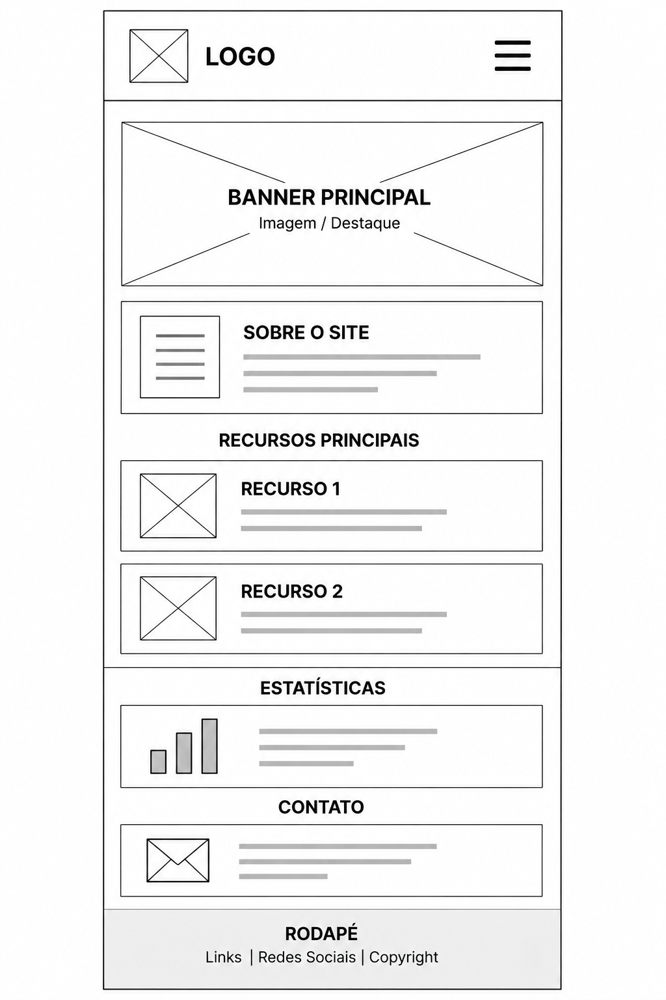
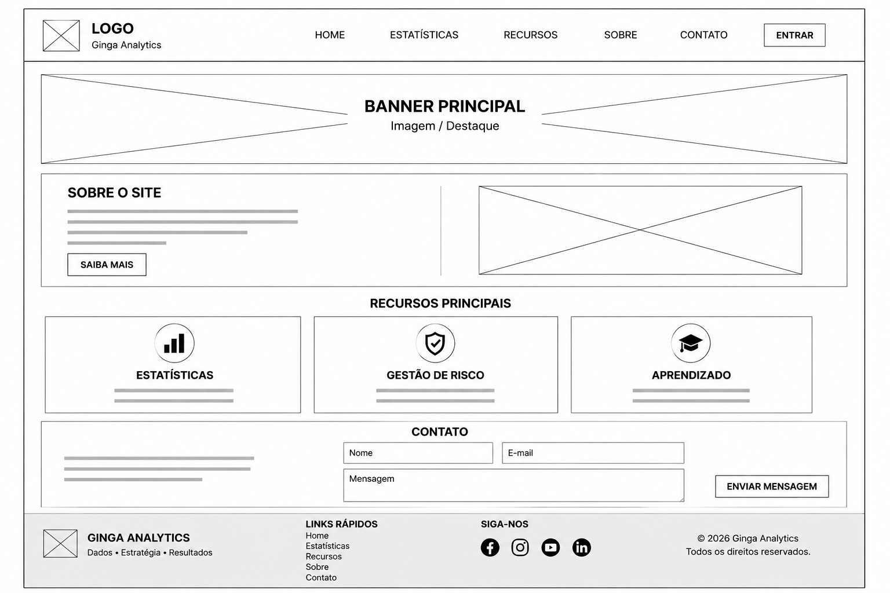

Site Name
Ginga Analytics
O nome "Ginga Analytics" foi escolhido porque representa um portal dedicado à análise de estatísticas esportivas, gestão de risco e informações relacionadas ao mercado de iGaming.
Site Purpose
O objetivo deste site é fornecer informações educativas sobre iGaming, estatísticas esportivas, análise de partidas, probabilidades, gerenciamento de banca e apostas responsáveis.
Scenarios
- Como interpretar as odds antes de realizar uma aposta?
- Onde posso encontrar estatísticas confiáveis para uma partida?
Color Schema
- Azul Escuro (#0B1F3A) - Cabeçalho, títulos e menu.
- Laranja (#F7931E) - Botões e destaques.
- Branco (#FFFFFF) - Fundo principal.
- Cinza Claro (#F4F4F4) - Cartões e seções.
Typography
- Poppins - Títulos e navegação.
- Roboto - Parágrafos e listas.
Wireframes
Mobile View

Desktop View
